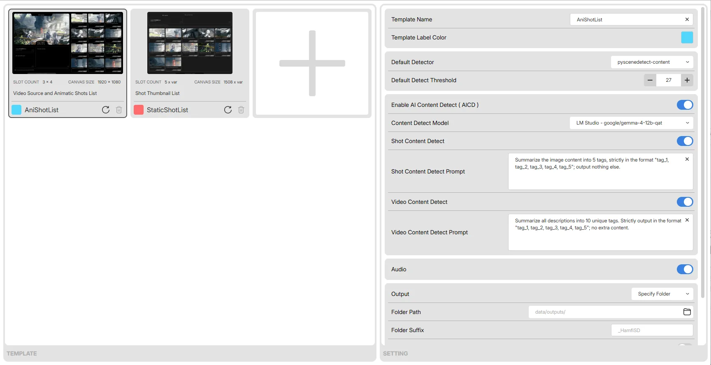
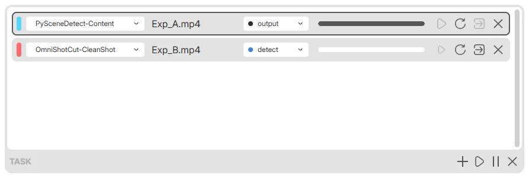
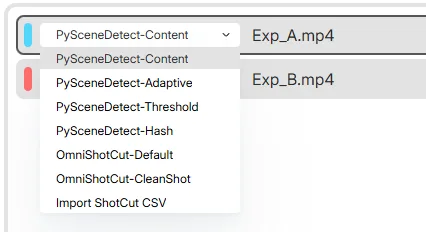

Import
Import videos through multiple routes, read metadata, build a task list, and assign each task a template.
Video cut point detection, Shot content analysis, Template-based video processing
Multiple detection modes · AI Content Detection · Fully local
v0.5.260806

Workflow
Import videos through multiple routes, read metadata, build a task list, and assign each task a template.
Detect cut points with multiple modes, visualize thresholds, adjust thresholds and cut points interactively, and generate a shot list.
Use a multimodal LLM with custom prompts to inspect every shot, generate the information you need, and summarize the results.
Produce storyboard arrays in multiple formats from templates, and export shot data, mid-frame thumbnails, and video clips.

Template
A template is made of an SVG and a rules JSON: the SVG describes the composition style, while the JSON records placement rules and default settings. Each task's processing pipeline is also determined by its assigned template.

Multitask
Imported videos enter a task queue and can be processed in parallel; each task can have its own template, detection mode, and cut point adjustments. The task list shows every task's stage and progress in real time, keeping the whole run under control.

Detect
Four CPU detection modes from PySceneDetect — Content / Adaptive / Threshold / Hash — plus two GPU modes from OmniShotCut, default / clean_shot, and direct import of cut point CSV files generated by Adobe Premiere. Thresholds and cut points are shown on a chart: drag the threshold line to adjust it, or exclude individual frames.

AICD
Write prompts in the template, or define prompts for individual shots. A multimodal model describes each shot as you ask, and can also summarize the whole video. Results can be regenerated one by one or edited by hand before you confirm and compose. LM Studio / DeepSeek / OpenAI are included, and any compatible service can be connected.
Output

A video composed from modules such as the source footage, video info, and an animated storyboard array; the composition style is freely defined by the template.

A storyboard sheet composed from modules such as video info and the storyboard array; the composition style is freely defined by the template.
Sample footage: Hyundai “On To Better” — The Mill. Used for output demonstration only.
Download
Windows 10 / 11 64-bit; WebView2 Runtime required; NVIDIA CUDA required for GPU detection.